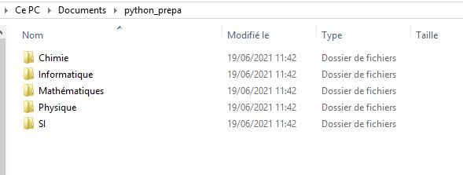
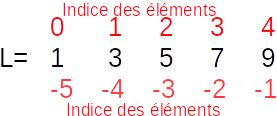

1.1. Environnement de développement.¶
Un environnement de développement (IDE) est un logiciel permettant d’écrire du code Python et de l’interpréter grâce à l’interface du logiciel. Il existe de nombreux IDE pour Python. Celui conseillé pour l’instant est Pyzo, une présentation rapide a été donnée avec le tutoriel sur l’installation de Pyzo.
1.1.1. Quelques bonnes pratiques.¶
Vous serez amenés à créer des fichiers contenant vos scripts ou à récupérer des fichiers donnés par vos enseignants. Il est donc important de savoir où les enregistrer pour les utiliser sous Pyzo. L’organisation sera de plus importante lorsqu’il sera question de manipuler des fichiers de données expérimentales.
Il est donc conseillé de créer un répertoire spécifique dans lequel vous enregistrerez vos fichiers. Pour cela, il suffit d’ouvrir l’explorateur de fichiers (Windows) ou Finder (MacOs) pour créer un répertoire. Préférez créer votre répertoire dans le répertoire Documents (ou MesDocuments), cela facilitera l’accès aux fichiers si vous êtes amenés plus tard à utiliser des logiciels comme Jupyter. Dans l’exemple ci-dessous, un dossier python_prepa a été créé dans Documents. Plusieurs sous dossiers pour chaque matière ont été créés, à vous de vous organiser au mieux par la suite.

1.2. Indentation¶
L’indentation est le décalage de certaines lignes de code appartenant au même bloc (corps d’une fonction, d’une boucle…). On décale (on indente) une ligne grâce à Espace (plusieurs fois) ou Tab.
n = 10 # Code non indenté
for i in range(n): # Démarrage d'une boucle : le corps de la boucle doit être indenté
a = i ** 2 # Partie indenté
b = a + 2
print(b) # Fin de la partie indenté (donc du bloc)
Dans beaucoup de langage, l’indentation est optionnelle pour rendre le code plus lisible. Dans Python, elle est obligatoire pour définir l’ensemble d’instructions qui feront partie d’un même bloc (ensemble d’instruction d’une fonction par exemple). Les blocs (fonction, condition, boucle) seront présentés ensuite.
1.3. Les types et opérations usuelles.¶
On ne décrit ici que les types simples et les opérations que nous utiliserons le plus. D’autres types plus particuliers ou issus de bibliothèques non standards seront présentés plus tard.
Type : int
Exemple : 3 ou 123543654 ou -3465
Opérateur/Fonctions usuelles :
Addition :
3 + 4Soustraction :
3 - 4Multiplication :
3 * 4Division entière :
5 // 3(renvoie 1)Reste de la division euclidienne :
5 % 3(renvoie 2)Puissance :
3 ** 2(renvoie 9)
Type : float
Exemple : 3.45ou 3254.234 ou -23.34 ou 3. ou -5. (observez le . après le 3 et le 5).
Opérateur/Fonctions usuelles :
Addition :
3.2 + 4.1Soustraction :
3. - 4.5Multiplication :
3.1 * 4.2Division :
3.3 / 4.Puissance :
3.3 ** 4.
Note
Une opération entre un entier et un flottant est possible, elle renverra un flottant.
Type : bool
Exemple : True, False
Opérateur/Fonctions usuelles :
Négation :
notOu :
orEt :
and
Type : str
Exemple : "Hello World !", "Les guillemets sont importantes", 'Ou des apostrophes'
Opérateur/Fonctions usuelles :
Concaténation :
"Hello" + "World !"renvoie"HelloWorld !"Longueur :
len("Hello")renvoie5Transformer un nombre en chaine de caractère :
str(345.2)renvoie la chaine de caractère"345.2"Accès à un caractère :
"Hello"[0]renvoie"H","Hello"[4]renvoie"o",
Attention
La position des caractères commence à 0 et non à 1
Il existe aussi d’autres fonctions générales qui s’appliquent sur les différents types comme print(...) qui sert à afficher l’objet considéré.
1.4. Variables et affection¶
Une variable est un élément servant à stocker des données dans un espace mémoire dédié.
1.4.1. Affection¶
On utilise le signal =. Ci dessous l’affection de l’entier 1 dans la variable a
a = 1
Important
Affecter n’est pas afficher. Si vous voulez afficher le contenu d’une variable, il faut utiliser la fonction print(nom_de_variable).
1.4.2. Manipulation¶
Une variable peut être utilisée par les opérateurs et fonctions associées au type de la données stockées. Par exemple, avec des flottants :
longueur = 8.2 # Affection du flottant 8.2 dans la variable longueur
largeur = 3 # Affection de l'entier 3 dans la variable largeur
aire = longueur * largeur # Calcul du produit. aire est un flottant
print(aire) # On affiche la valeur calculée.
24.599999999999998
1.4.3. Type d’une variable¶
Pour connaître le type d’une variable, on utilise la fonction type() :
a = 3
print("Le type de cette variable est : " + str(type(a)))
a = 3.34
print("Le type de cette variable est : " + str(type(a)))
a = "Une phrase !"
print("Le type de cette variable est : " + str(type(a)))
a = True
print("Le type de cette variable est : " + str(type(a)))
Le type de cette variable est : <class 'int'>
Le type de cette variable est : <class 'float'>
Le type de cette variable est : <class 'str'>
Le type de cette variable est : <class 'bool'>
1.4.4. Règles de nommage¶
Un nom de variable :
peut contenir des lettres (minuscules ou majuscules), des chiffres, le caractère
_ne peut pas commencer par un chiffre
ne peut être un mot reservé par python (comme
print) (Python renverra une erreur le cas échéant donc pas la peine d’apprendre ces mots par coeur !)
1.5. Les listes¶
Les listes sont des objets Python un peu plus complexes qui permettent de stocker, un ensemble d’objets dans un ordre choisi.
1.5.1. Créer et manipuler une liste¶
Créer une liste vide :
l = []Créer une liste à partir de données :
l = [3, "phrase", 4.2, "teste"]Ajouter un élément à une liste
l2à la fin :l2.append("Un ajout")Concaténer deux listes
l1etl3:l1 + l3
"""Liste vide"""
l1 = []
print(l1)
""" Liste remplie"""
l1 = [3, "phrase", 4.2, "teste"]
print(l1)
""" Ajout d'un élément"""
l2 = [1, 2]
l2.append(4.3)
print(l2)
""" Concaténation"""
l = l1 + l2
print(l)
[]
[3, 'phrase', 4.2, 'teste']
[1, 2, 4.3]
[3, 'phrase', 4.2, 'teste', 1, 2, 4.3]
1.5.2. Extraction¶
1.5.2.1. Un élément¶
On peut extraire un élément d’une liste comme pour une chaine de caractère :
l = [1, 3, 5, 7, 9]
a = l[0] # On commence le positionnement à 0
print(a) # Renvoie 1
a = l[3] # Il s'agit du... quatrième élément
print(a) # Renvoie 7
a = l[5] # Il n'y a pas de 6ème élément : Python affiche une erreur.
1
7
---------------------------------------------------------------------------
IndexError Traceback (most recent call last)
<ipython-input-5-0207c8f16480> in <module>
5 a = l[3] # Il s'agit du... quatrième élément
6 print(a) # Renvoie 7
----> 7 a = l[5] # Il n'y a pas de 6ème élément : Python affiche une erreur.
IndexError: list index out of range
Tip
On peut utiliser des nombres négatifs pour “partir de la fin”, le nombre -1 désigne alors le dernier élément de la liste.

Dans l’exemple précédent, l[-1] renvoie 9 et l[-2] renvoie 7.
1.5.2.2. Une partie de la liste¶
On peut extraire un ensemble d’éléments d’une liste (on obtient alors une liste).
l[3:6] : on commence au 4ème élément (l’indexation commence à 0) et on s’arrête au 7ème élément non inclus.
l = [1, 3, 5, 7, 9]
a = l[2:4] # renvoie la portion du troisième élément (5) au cinquième non inclus, donc on s'arrête à 7
print(a)
[5, 7]
Syntaxes utiles :
l[1:]: renvoie depuis le deuxième élément jusqu’à la fin de la liste (précédemment :[3, 5, 7, 9]).l[:3]: renvoie du début de la liste jusqu’au 4ème élément non inclus (précédemment :[1, 3, 5]).On peut utiliser les nombres négatifs comme présentés précémment.
1.5.3. Fonctions de bases¶
Plusieurs fonctions de bases s’appliquent à une liste (ici la liste s’appellera l).
Longueur de la liste :
len(l)Enlever le (i+1)ème élément de la liste
l:l.pop(i)(C’est bien la variablelqui est modifiée comme pour append).
1.6. Les commentaires¶
On peut ajouter des commentaires (parties non interprêtées) :
commentaires sur une ligne avec
#commentaires sur plusieurs lignes entre
"""et"""